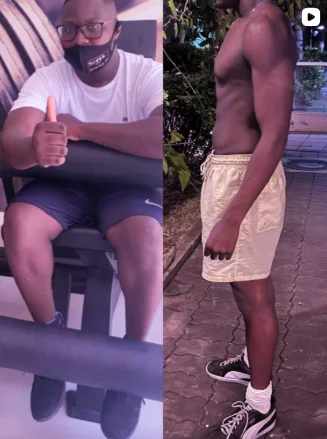
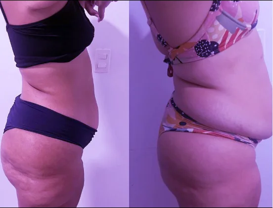

Gelo, pomada e fortalecer "só a perna" alivia. Por uns dias. O Joelho Blindado fortalece o que sustenta seu joelho (coxa, glúteo, quadril e panturrilha) em 12 semanas: 30 minutos, 3x por semana, em casa ou na academia. Com testes pra você ver a evolução em números.
Pagamento seguro • Cartão e Pix
Sem vergonha. É entre você e a tela.
Porque descer escada é o momento em que o joelho mais precisa de FREIO, e o freio é o músculo da coxa. Quando a coxa, o glúteo e o quadril estão fracos, a articulação recebe a pancada que o músculo deveria absorver. Joelho que dói no agachar, no descer e que estala não é cartilagem gasta. É músculo fraco e descontrolado em volta dele.
O Joelho Blindado ataca a causa. Fortalece e dá controle ao quadríceps, glúteo, quadril e panturrilha, a musculatura que blinda seu joelho, numa progressão de 3 fases. Pensa numa escada:
Você mede a força e o controle do joelho hoje, com testes simples que faz em casa. É seu ponto de partida em números, e ainda compara um lado com o outro.
Acorda o quadríceps (principalmente o VMO, do lado de dentro) e o glúteo, e tira a sobrecarga de dentro da articulação. Movimentos controlados, sem dor. É aqui que o joelho começa a dar trégua.
Entra carga progressiva. A coxa, o glúteo e o quadril ficam fortes de verdade. É aqui que a blindagem é construída.
Descer escada com freio, agachar com peso, frear o corpo, pequenas aterrissagens. Seu joelho pronto pra vida real: escada, ladeira, corridinha, esporte. Não só pro exercício.
Refaz os testes do início e compara. Evolução em números, não em achismo.
Personal trainer especialista em treino postural e funcional: dor de joelho, quadril e coluna, ativação de glúteo e correção de desequilíbrios. O Joelho Blindado usa o mesmo método de 3 fases dos alunos da consultoria.


Mensagens reais de alunos do Lucas. Cada corpo responde no seu tempo, conforme dedicação e individualidade.
Pagamento seguro • Cartão e Pix • Acesso imediato
Quero começar agorapreço de lançamento⏳ Preço de lançamento por tempo limitado. Quando essa janela fechar, o protocolo sobe de preço e não volta. Quem entra agora paga menos pela mesma coisa.
Do jeito que está hoje, com medo da próxima escada. Ou blindado, testado e mais forte do que entrou. A diferença entre os dois é começar.
Quero blindar meu joelhopreço de lançamento • Acesso imediato